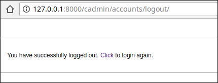

Django Logging Users In and Out
Last updated on July 27, 2020
Django provides built-in URL patterns and view functions which makes adding login and logout system to your site a breeze. But before we add them to our project, we will create login and logout system on our own by using some utility functions provided by the Django authentication framework.
The authenticate() and login() functions #
Django authentication framework (django.contrib.auth) provides authenticate() and login() functions whose job is to authenticate and login users respectively.
The authenticate() function accepts two keyword arguments, username and password and returns an object of type User, if username and password are valid. Otherwise, it returns None.
1 2 3 4 5 6 7 8 9 10 11 12 13 14 15 | >>>
>>> from django.contrib import auth
>>>
>>> user = auth.authenticate(username='noisyboy', password='pass')
>>> user
<User: noisyboy>
>>>
>>> if user is not None:
... print("Credentials are valid")
... else:
... print("Invalid Credentials")
...
Credentials are valid
>>>
>>>
|
The authenticate() function only verifies whether the credentials provided are valid or not. It doesn't login the user.
To login user we use login() function. It takes two arguments, request object (HttpRequest) and a User object. To login user it saves the user's ID in the session, using Django session framework.
Once a user is logged in, he should be able to logout and this is the responsibility of logout() function.
The logout() function #
To logout users we use logout() function. It accepts a request (HttpRequest) object and returns None. Calling logout() function completely deletes the session data associated with the logged in user.
It is important to note that calling logout() function doesn't throw any errors if the user is not logged in.
The logout() function also removes the cookie from the browser.
Another Login System #
Now we have enough knowledge to roll out our own login system.
In the blog's app views.py add login(), logout() and admin_page() views as follows:
TGDB/django_project/blog/views.py
1 2 3 4 5 6 7 8 9 10 11 12 13 14 15 16 17 18 19 20 21 22 23 24 25 26 27 28 29 30 31 32 33 34 35 36 37 38 | #...
from django_project import helpers
from django.contrib import auth
#...
def lousy_logout(request):
#...
def login(request):
if request.user.is_authenticated():
return redirect('admin_page')
if request.method == 'POST':
username = request.POST.get('username')
password = request.POST.get('password')
user = auth.authenticate(username=username, password=password)
if user is not None:
# correct username and password login the user
auth.login(request, user)
return redirect('admin_page')
else:
messages.error(request, 'Error wrong username/password')
return render(request, 'blog/login.html')
def logout(request):
auth.logout(request)
return render(request,'blog/logout.html')
def admin_page(request):
if not request.user.is_authenticated():
return redirect('blog_login')
return render(request, 'blog/admin_page.html')
|
Then create three templates login.html, logout.html and admin_page.html as follows:
TGDB/django_project/blog/templates/blog/login.html
1 2 3 4 5 6 7 8 9 10 11 12 13 14 15 16 17 18 19 20 21 22 23 24 25 26 27 28 29 30 31 32 33 34 35 36 37 38 39 40 41 42 43 | {% extends "blog/base.html" %}
{% block title %}
Blog - {{ block.super }}
{% endblock %}
{% block content %}
<div class="content">
<div class="section-inner clearfix">
<h3>Login Form</h3>
{% if messages %}
<ul>
{% for message in messages %}
<li>{{ message }}</li>
{% endfor %}
</ul>
{% endif %}
<form action="" method="post">
{% csrf_token %}
<table>
<tr>
<td><label for="id_username">Enter username</label></td>
<td><input type="text" id="id_username" name="username"></td>
</tr>
<tr>
<td><label for="id_username">Enter password</label></td>
<td><input type="password" id="id_password" name="password"></td>
</tr>
<tr>
<td></td>
<td><input type="submit" value="Submit"></td>
</tr>
</table>
</form>
</div>
</div>
{% endblock %}
|
TGDB/django_project/blog/templates/blog/logout.html
1 2 3 4 5 6 7 8 9 10 11 12 13 14 15 16 17 | {% extends "blog/base.html" %}
{% block title %}
Blog - {{ block.super }}
{% endblock %}
{% block content %}
<div class="content">
<div class="section-inner clearfix">
<p>You are logged out. <a href="{% url 'blog_login' %}">Click here</a> to login again.</p>
</div>
</div>
{% endblock %}
|
TGDB/django_project/blog/templates/blog/admin_page.html
1 2 3 4 5 6 7 8 9 10 11 12 13 14 15 16 17 18 19 20 21 22 23 24 25 26 27 28 29 | {% extends "blog/base.html" %}
{% block title %}
Blog - {{ block.super }}
{% endblock %}
{% block content %}
<div class="content">
<div class="section-inner clearfix">
<p>Welcome {{ request.user.username }} !</p>
<p>User Details:</p>
<ul>
<li>Email: {{ request.user.username.email|default:"NA" }}</li>
<li>SuperUser: {{ request.user.is_superuser }}</li>
<li>Staff: {{ request.user.is_staff }}</li>
<li>Date Joined: {{ request.user.date_joined }}</li>
<li>Last Login: {{ request.user.last_login }}</li>
</ul>
<p><a href="{% url 'blog_logout' %}">Logout</a></p>
</div>
</div>
{% endblock %}
|
Finally, add the following URL patterns in the blog's urls.py file:
TGDB/django_project/blog/urls.py
1 2 3 4 5 6 7 8 | #...
urlpatterns = [
url(r'^login/$', views.login, name='blog_login'),
url(r'^logout/$', views.logout, name='blog_logout'),
url(r'^admin_page/$', views.admin_page, name='admin_page'),
url(r'^lousy-login/$', views.lousy_login, name='lousy_login'),
#...
]
|
Start the development server and visit http://127.0.0.1:8000/login/. You should get a page like this:
Enter correct username and password and you will be greeted with a page like this:
Nothing extraordinary here, we are just using some of the attributes we have learned in earlier lesson to get some information about the current logged in user.
To logout, click the logout link at the bottom of the page.
Using built-in login() and logout() views #
Django provides two views django.contrib.auth.login() and django.contrib.auth.logout() to login and logout users respectively.
To use these views, import django.contrib.auth package and then add the following two URL patterns in the cadmin's app urls.py file:
TGDB/django_project/cadmin/urls.py
1 2 3 4 5 6 7 8 9 10 | #...
from . import views
from django.contrib.auth import views as auth_views
urlpatterns = [
url(r'^accounts/login/$', auth_views.login, name='login'),
url(r'^accounts/logout/$', auth_views.logout, name='logout'),
url(r'^post/add/$', views.post_add, name='post_add'),
#...
]
|
By default, Django uses /accounts/login/ and /accounts/logout/ URL for login and logout respectively.
Save the urls.py file and visit http://127.0.0.1:8000/cadmin/accounts/login/. You will get a TemplateDoesNotExist exception as follows:
The problem is that by default, django.contrib.auth.login() view looks for registration/login.html template in the templates directory of the auth app (django.contrib.auth). Because there is no such file in the templates directory of the auth app, Django raises a TemplateDoesNotExist exception.
We can pass a different template to the django.contrib.auth.login() view using the template_name keyword argument as follows:
1 2 3 4 5 | url(r'^accounts/login/$',
auth_views.login,
{'template_name': 'blog/login.html'},
name='login'
)
|
Similarly, by default the django.contrib.auth.logout() view uses registration/logged_out.html template from the admin app (django.contrib.admin). This is the same template which you would see if you logout from the Django Admin site.
Visit http://127.0.0.1:8000/cadmin/accounts/logout/ and see it yourself.

Just as with django.contrib.auth.login() view, we can use a different template by passing template_name keyword argument to django.contrib.auth.logout() view as follows:
1 2 3 4 5 | url(r'^accounts/logout/$',
auth_views.logout,
{'template_name': 'blog/logout.html'},
name='logout'
)
|
We will create custom templates for login and logout page. So modify login and logout URLs to include template name in cadmin's urls.py file as follows:
TGDB/django_project/cadmin/urls.py
1 2 3 4 5 6 7 | #...
urlpatterns = [
url(r'^accounts/login/$', auth_views.login, {'template_name': 'cadmin/login.html'}, name='login'),
url(r'^accounts/logout/$', auth_views.logout, {'template_name': 'cadmin/logout.html'}, name='logout'),
url(r'^post/add/$', views.post_add, name='post_add'),
#...
]
|
Before we create login and logout templates, let's create another URL pattern which points to the root URL (i.e http://127.0.0.1:8000/cadmin/) of the cadmin app. Add a URL pattern named home to the urlpatterns list in urls.py file as follows:
TGDB/django_project/cadmin/urls.py
1 2 3 4 5 6 | #...
urlpatterns = [
url(r'^$', views.home, name='home'),
url(r'^accounts/login/$', auth_views.login, {'template_name': 'cadmin/login.html'}, name='login'),
#...
]
|
Then, in the cadmin views.py file add the home() view just below post_update() view as follows:
TGDB/django_project/cadmin/views.py
1 2 3 4 5 6 7 8 9 | #...
def post_update(request, pk):
#...
def home(request):
if not request.user.is_authenticated():
return redirect('login')
return render(request, 'cadmin/admin_page.html')
|
The only thing that remains now is the templates for the login, logout and admin page. Let's start by creating login template first.
Create a new file named login.html inside cadmin app's templates directory (i.e cadmin/templates/cadmin/) and add the following code to it:
TGDB/django_project/cadmin/templates/cadmin/login.html
1 2 3 4 5 6 7 8 9 10 11 12 13 14 15 16 17 18 19 20 21 22 | {% extends "cadmin/base.html" %}
{% block content %}
<div class="login">
<h1>The Great Django Blog - Login</h1>
<form method="post" action="">
{% csrf_token %}
<table>
{{ form.as_table }}
<tr>
<td> </td>
<td><input type="submit" value="Submit"></td>
</tr>
</table>
</form>
</div>
{% endblock %}
|
The value of the form template variable will be provided by django.contrib.auth.login() view using context.
Create another template named logout.html with the following code.
TGDB/django_project/cadmin/templates/cadmin/logout.html
1 2 3 4 5 6 7 8 9 | {% extends "cadmin/base.html" %}
{% block content %}
<div class="logout">
<p>You have successfully logged out. <a href="{% url 'login' %}">Click</a> to login again.</p>
</div>
{% endblock %}
|
Finally, create admin_page.html and add the following code to it.
TGDB/django_project/cadmin/templates/cadmin/admin_page.html
1 2 3 4 5 6 7 8 9 10 11 12 13 14 15 16 17 18 19 20 21 22 23 24 25 26 27 28 29 | {% extends "blog/base.html" %}
{% block title %}
Blog - {{ block.super }}
{% endblock %}
{% block content %}
<div class="content">
<div class="section-inner clearfix">
<p>Welcome {{ request.user.username }} !</p>
<p>User Details:</p>
<ul>
<li>Email: {{ request.user.email|default:"NA" }}</li>
<li>SuperUser: {{ request.user.is_superuser }}</li>
<li>Staff: {{ request.user.is_staff }}</li>
<li>Date Joined: {{ request.user.date_joined }}</li>
<li>Last Login: {{ request.user.last_login }}</li>
</ul>
<p><a href="{% url 'logout' %}">Logout</a></p>
</div>
</div>
{% endblock %}
|
Our login view is almost ready. Visit http://127.0.0.1:8000/cadmin/accounts/login/ and try logging in using wrong username and password. You will be greeted with errors like this:
Try logging in one more time using the correct username and password. If user logged in successfully then the django.contrib.auth.login() view will redirect the user to /accounts/profile/ URL, this is Django's another default setting kicking in.
We don't have any URL pattern in cadmin's urls.py for /accounts/profile/ that's why an HTTP 404 error is displayed.
We can override this setting by adding a hidden field (in login.html) named next with the URL to redirect after login.
<td><input type="hidden" name="next" value="/cadmin/"></td>
This will redirect the user to http://127.0.0.1:8000/cadmin/, after successful login.
Instead of hardcoding the URL. We could also pass the value of the next field using query string like this:
http://127.0.0.1:8000/cadmin/accounts/login/?next=/cadmin/
Open login.html and add the hidden field named next as follows:
TGDB/django_project/cadmin/templates/cadmin/login.html
1 2 3 4 5 6 7 8 9 10 11 12 | {# ... #}
<form method="post" action="">
{% csrf_token %}
<table>
{{ form.as_table }}
<tr>
<td><input type="hidden" name="next" value="{{ next|default:'/cadmin/' }}"></td>
<td><input type="submit" value="Submit"></td>
</tr>
</table>
</form>
{# ... #}
|
This is how the above code works:
If we don't provide any value to next form field as query string then the default value i.e /cadmin/ will be used. Otherwise, the user will be redirected to the URL given by the next as a query string.
Visit http://127.0.0.1:8000/cadmin/accounts/login/, enter correct username/password and hit enter. This time you will be redirected to http://127.0.0.1:8000/cadmin/, which looks like this:
To logout click "Logout" link at the bottom of the page or visit http://127.0.0.1:8000/cadmin/accounts/logout/ and you will see a page like this:

Our login and logout system is working as expected, but from the usability point of view, there is still one problem.
Visit http://127.0.0.1:8000/cadmin/accounts/login/ once again and login using the correct username and password. As expected, you will be redirected to http://127.0.0.1:8000/cadmin/. At this point, if we visit http://127.0.0.1:8000/cadmin/accounts/login/ again, Django will redisplay the login the form. Redisplaying login form to a logged in user is absolutely pointless.
We can change this behavior by creating a custom login view function. Open cadmin app's views.py and append the login() view as follows:
TGDB/django_project/cadmin/views.py
1 2 3 4 5 6 7 8 9 10 11 12 13 | #...
from blog.models import Post, Author, Category, Tag
from django.contrib.auth import views as auth_views
#...
def home(request):
#...
def login(request, **kwargs):
if request.user.is_authenticated():
return redirect('/cadmin/')
else:
return auth_views.login(request, **kwargs)
|
Nothing new here except the additional **kwargs argument. The kwargs enables us to pass the all the extra keyword arguments passed to this view function to the built-in django.contrib.auth.login() view function.
Here is how it works:
The login() view first checks whether the user is authenticated or not. If the user is authenticated then it will redirect him to the admin page. Otherwise, it will display the login form by calling built-in django.contrib.auth.login() view.
Next, we have to update our login URL pattern to use our login() view instead of one provided by Django Authentication framework. Update login URL pattern in urls.py as follows:
TGDB/django_project/cadmin/urls.py
1 2 3 4 5 6 | #...
urlpatterns= [
url(r'^$', views.home, name='home'),
url(r'^accounts/login/$', views.login, {'template_name': 'blog/login.html'}, name='login'),
#...
]
|
Now if you visit http://127.0.0.1:8000/cadmin/accounts/login/ after logging in, you will be redirected to http://127.0.0.1:8000/cadmin/.
Limiting Access #
The whole point of implementing login system to our site is to prevent unauthorized access to administrative pages.
A simple way to restrict access to a page is to first check whether the user is authenticated or not using is_authenticated() method then redirect the user accordingly. For example:
1 2 3 4 5 | def our_view(request):
if not request.user.is_authenticated():
return redirect("login")
return render(request, 'app/view.html')
|
We have already employed this technique in the home() and login() view functions.
TGDB/django_project/cadmin/views.py
1 2 3 4 5 6 7 8 9 10 11 12 13 | #...
def home(request):
if not request.user.is_authenticated():
return redirect('login')
return render(request, 'cadmin/admin_page.html')
def login(request, **kwargs):
if request.user.is_authenticated():
return redirect('/cadmin/')
else:
return auth_views.login(request, **kwargs)
|
In Django, the preferred way to limit access to pages is to use login_required decorator. To use login_required decorator you must import it from django.contrib.auth.decorators.
Let's update home() view to use login_required decorator as follows:
TGDB/django_project/cadmin/views.py
1 2 3 4 5 6 7 8 9 | #...
from django.contrib.auth import views as auth_views
from django.contrib.auth.decorators import login_required
#...
@login_required
def home(request):
return render(request, 'cadmin/admin_page.html')
#...
|
Here is how the login_required decorator work:
If the user is not logged then it will redirect the user to /accounts/login/ (Django's default login URL), passing the current absolute URL as a value to the next query parameter. For example, open your browser and visit http://127.0.0.1:8000/cadmin/ (without logging in). The login_required will redirect you to http://127.0.0.1:8000/accounts/login/?next=/cadmin/ URL.
On the other hand, if the user is logged in then the login_required would do nothing. In the next section, we are going to change Django's default login URL i.e /accounts/login/.
Updating default Login URL #
In the earlier sections, we have encountered many places where Django uses /accounts/login/ as default URL for login. To change default login URL we use LOGIN_URL setting in settings.py file. LOGIN_URL accepts URL or name of the URL pattern. Open settings.py file and add the following variable at the end of the file.
LOGIN_URL = 'login'
Here we are assigning the value of the name attribute of login URL pattern from cadmin's urls.py. In other words, the above code changes the default login URL from /accounts/login/ to /cadmin/accounts/login/. As a result, if you try to visit a view which has login_required decorator applied to it, you will be redirected to /cadmin/accounts/login/ URL instead of /accounts/login/.
In our case, we want users to let users to login and logout using /cadmin/login/ and /cadmin/logout/ URLs respectively. To do so, open cadmin's urls.py file and make the following changes:
TGDB/django_project/cadmin/urls.py
1 2 3 4 5 6 7 | #...
urlpatterns = [
url(r'^$', views.home, name='home'),
url(r'^login/$', views.login, {'template_name': 'cadmin/login.html'}, name='login'),
url(r'^logout/$', auth_views.logout, {'template_name': 'cadmin/logout.html'}, name='logout'),
#...
]
|
As we are using named URL pattern in LOGIN_URL setting we don't need to update anything else. Now our updated login and logout URLs are /cadmin/login/ and /cadmin/logout/ respectively. To verify the changes visit http://127.0.0.1:8000/cadmin/ and you will be redirected to http://127.0.0.1:8000/cadmin/login/?next=/cadmin/.
Enter correct username and password and you will get a page like this:
Note: To checkout this version of the repository type git checkout 30a.
Load Comments